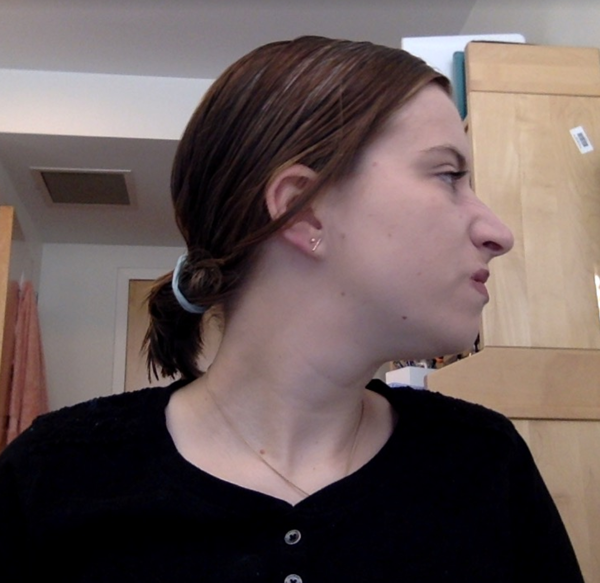
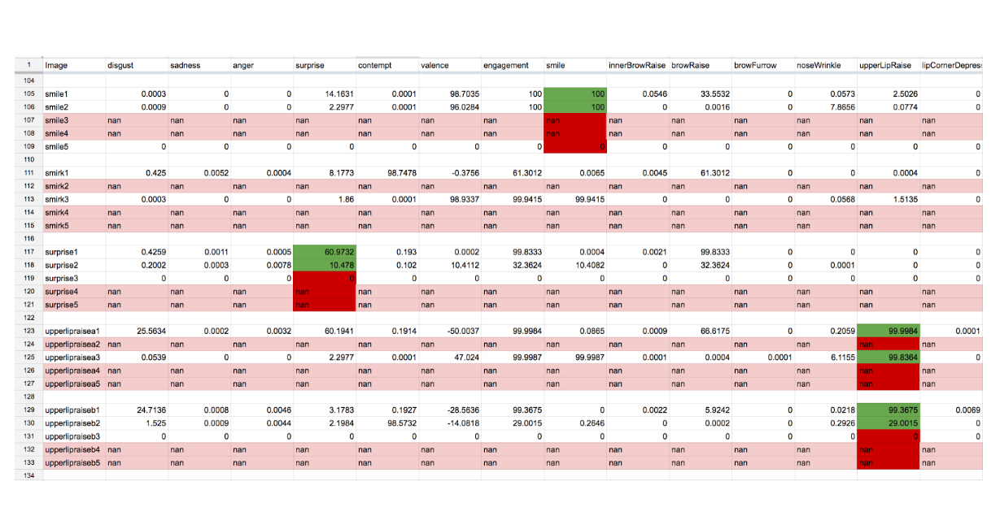
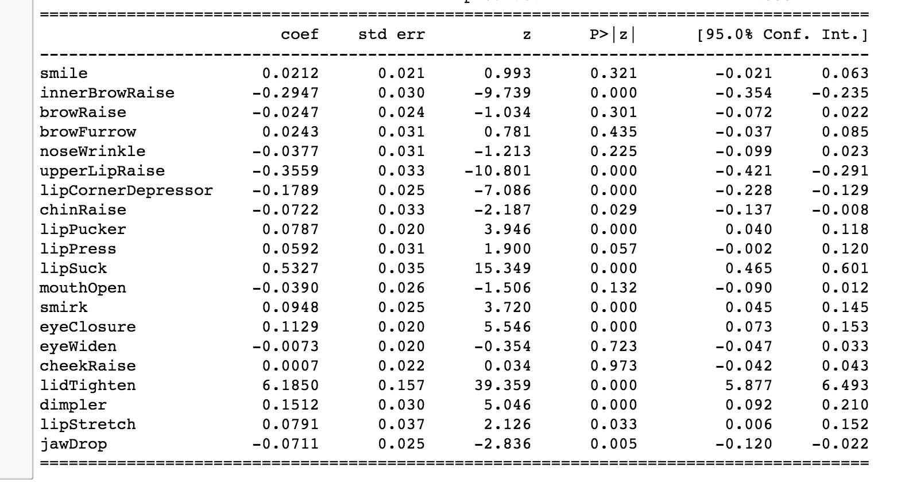
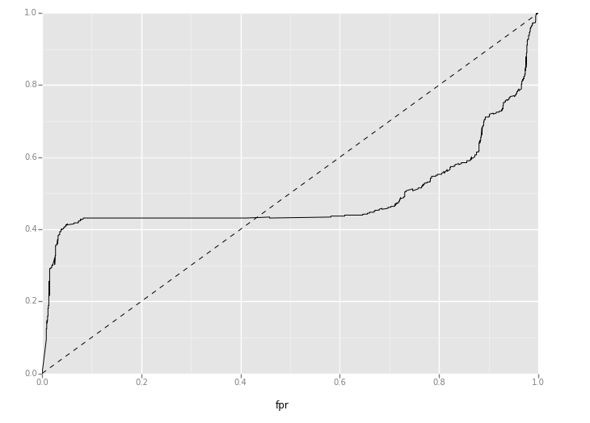
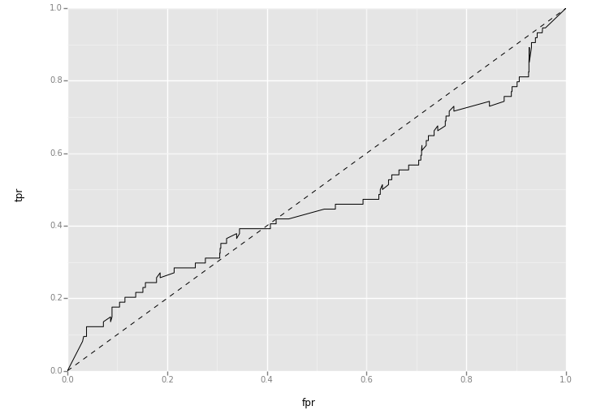
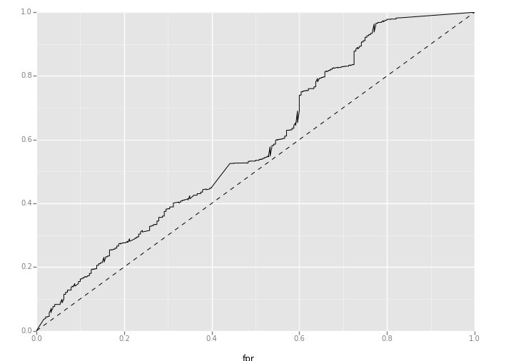
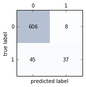

CAS CS585 - Image and Video Computing - Fall 2016
Project Report - P3
Cristina Estupinan
Abhyudaya Alva
Affectiva-based Face Expression Monitoring and Evaluation - A Student-Learning Analysis
Overview
We used Affectiva to analyze facial expressions of students while being engaged in a learning task, and tried to detect where it fails at correctly recognizing emotions, and used this data to devise a more accurate emotion classification model. Since our analysis involves an external tool, the intial task was to thoroughly test and validate the tool and its accuracy. We started by testing Affectiva's performance in evaluating facial expressions and validating the results it provided. In order to analyse the student videos we recorded videos of ourselves being engaged in various learning tasks. We annotated the videos into different binary classes for 'Frustrated', 'Engaged' and 'Tired' and tried to build a model that can help us draw some meaningful conclusions from the dataset provided by Affectiva.
Experiments
We used the Affdex C++ SDK to analyse videos and images, which can be found here, and stored the data it provided in a csv file for further analysis.
The dataset for logistic regression consisted of affective output for facial action units that were obtained by running Affectiva on student learning videos. For various facial action units Affectiva gives a score from 1-100 along with it’s score for emotions and emojis etc. Since the video classifier for emotions on Affectiva considers the output of previous frame we do not consider this as the ground truth since it is possibly based on the interpretation of output on previous frame. We run the logistical regression for the ouput of only the facial action units which Affectiva measures throughout the video. The following fields form our explanatory variable for logistic regression:
- 'smile'
- 'innerBrowRaise'
- 'browRaise'
- 'browFurrow'
- 'noseWrinkle'
- 'upperLipRaise'
- 'lipCornerDepressor'
- 'chinRaise'
- 'lipPucker'
- 'lipPress'
- 'lipSuck'
- 'mouthOpen'
- 'smirk'
- 'eyeClosure'
- 'eyeWiden'
- 'cheekRaise'
- 'lidTighten'
- 'dimpler'
- 'lipStretch'
- 'jawDrop'
We annotated our videos into following classes:
| Frustrated | Tired | Engaged | Class |
|---|---|---|---|
| 0 | 0 | 0 | 0 |
| 0 | 0 | 1 | 1 |
| 0 | 1 | 0 | 2 |
| 0 | 1 | 1 | 3 |
| 1 | 0 | 0 | 4 |
| 1 | 0 | 1 | 5 |
| 1 | 1 | 0 | 6 |
| 1 | 1 | 1 | 7 |
For neural networks, we aggregated samples every 0.4 seconds into a single sample using their mean, and concatated 6 consecutive samples into one feature vector in order to show the relation of dependence among frames and features. This lead to a multilayer perceptron architure of 276 input nodes, 150 hidden nodes, and output nodes. We trained our neural network on the data by splitting the samples into training and testing.
Results
Affectiva
Affectiva detected feature points with great accuracy, especially in straight oriented images. However, it was not always succesful with classifying emotions and detecting action units correctly all the time. We found it that didn’t recognize faces in 82.61% of side-view images, and didn’t recognize 43.48% images, regardless of view. Similarly, we found that Affectiva fails during video when facial orientation changes. Also, it was interesting to note that when we brought our face closer or away from the video, affectiva took that as a change of expression, and hence that affected its performance. The data summarizes the same:
During video analysis, we found that Affectiva processed the videos at around half the actual framerate of the videos, leading to loss of some frames in terms of collecting data, but it was to be aggregated later regardless.
Logistic Regression
The results of logistic regression are as follows:
As we can see from the results inner Brow Raise is negatively correlated with frustration and lid tighten is positively correlated with frustration.
Frustration prediction based on Data points of entire dataset
| Frustrated | Tired | Engaged |
|---|---|---|
|  |  |
While we got better classifier in the initial phase for frustration, the classifier fails on cross validation on entirely new dataset. The ROC curve for our test results for frustration is as follows:
Neural Network
The actual samples after overall processing of data was reduced to ~2000, from nearly ~20000. The training on this data yielded an accuracy of 92.91%, with area under ROC curve = 78.1%. The model may have overfit the data, however, that would be solved with a larger and varying dataset. Also, we were most intersted in precision and sensitivity of our model, with the numbers at 95% and 57% respectively. It is important to note that the classes were not evenly distributed, which may have affecte the F-Measure, which is just the harmonic mean of sensitivity and precision. Hyperparametric tuning was not done, and that implementation may improve results.
Discussion and Conclusions
From our project, we feel that Affectiva, despite being state-of-the-art in computer vision and face detection, may not be enough on its own to solve the frustration detection problem. The multilayer perceptron model, if trained with A LOT of more data, and coupled with Affdex, would be a really effective model to detect student frustration in real-time, by taking data from affectiva and predicting it using the trained weights.
The most important improvement we can make to our project is gathering more and more data, and properly labelling it for training our devised model. Other points are summarized below.
- Better hand-tracking without affecting face detection could could give more physiological cues. Precision(0.95) and Sensitivity(0.57) are important metrics for our system.
- Not able to replicate results of [4]; Our Logistic Regression model shows that frustration is negatively correlated with inner brow raise and outer brow raise. It also positively correlates with lid tighten.
Acknowledgements
We would like to thank the teaching fellow for our course, Elham Saraee, for her continued support and guidance in our project.
Sources of Images and Code
Papers and Sources Referenced
| [1] | McDaniel, B. T., D’Mello, S. K., King, B. G., Chipman, P., Tapp, K., & Graesser, A. C. (2007). Facial Features for Affective State Detection in Learning Environments. In D. S. McNamara & J. G. Trafton (Eds.), Proceedings of the 29th Annual Cognitive Science Society (pp. 467-472). Austin, TX: Cognitive Science Society. [talk] |
| [2] | Valstar, M. F., Pantic, M. (2006) Biologically vs. Logic Inspired Encoding of Facial Actions and Emotions in Video. In 2006 IEEE International Conference on Multimedia and Expo (pp. 325-328). |
| [3] | Whitehill J, Serpell Z, Lin Y-C, Foster A, Movellan J. The faces of engagement: Automatic recognition of student engagement from facial expressions. 2014. |
| - | Affectiva Developer Portal : http://developer.affectiva.com/v3_1/javascript/ |
| [4] | Automatically Recognizing Facial Expression: Predicting Engagement and Frustration Joseph F. Grafsgaard1 , Joseph B. Wiggins1 , Kristy Elizabeth Boyer1 , Eric N. Wiebe2 , James C. Lester |